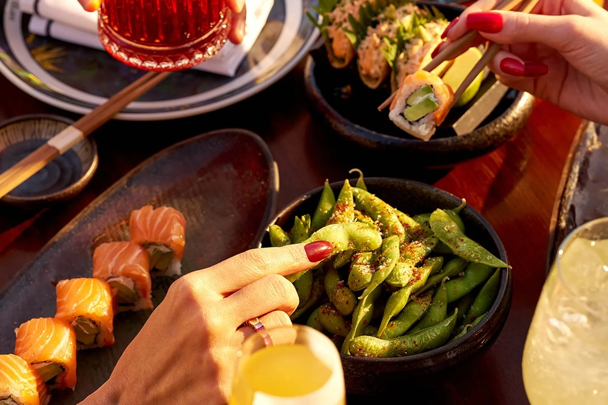
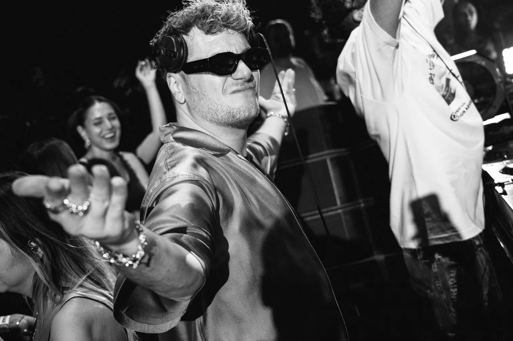

Jedes Jahr am 31. Dezember zündet Dubai dutzende Feuerwerke in der ganzen Stadt, vom Burj Khalifa bis Palm Jumeirah. Der wahre Luxus ist der richtige Platz um Mitternacht. Hier erfahren Sie, wo Sie es sehen und wie Sie buchen.
Burj Khalifa und Downtown
Die berühmteste Show der Stadt, gezündet vom höchsten Turm der Welt. Die Straßen in Downtown werden schon am Nachmittag gesperrt und die Menge ist riesig: Am besten sieht man sie von einem Tisch mit Aussicht, lange im Voraus reserviert.
Die Dachterrassen und Restaurants mit Blick auf den Turm sind an diesem Abend am gefragtesten, wie CÉ LA VI auf dem Dach des Address Sky View. Dinner, Countdown und gleich danach die Party.

Palm Jumeirah und Burj Al Arab
Atlantis The Palm, Atlantis The Royal und mehrere Hotels auf der Palm zünden ihre eigenen Feuerwerke über dem Meer. Die Stimmung ist entspannter: Dinner am Strand, dann leuchtet der Himmel über dem Wasser.
Auch am Burj Al Arab und in Bluewaters gibt es Feuerwerke. Für Silvester 2026 kündigte Dubai 48 Feuerwerke an 40 Orten an: Wo auch immer Sie sind, eine Show ist in der Nähe.
Von einer Yacht
Um mehrere Shows gleichzeitig zu sehen, ist das Meer unschlagbar. Vor der Palm oder gegenüber dem Burj Al Arab sehen Sie das Feuerwerk von einer privaten Yacht mit Crew, fern der Menge und mit Dinner an Bord. Yachten für den 31. sind mit als Erstes vergeben.
Siehe unsere Seite Yachtcharter in Dubai.
Nach Mitternacht
Dann geht die Nacht in den Clubs weiter. Ushuaïa Dubai Harbour hat seine Silvesternacht für Donnerstag, den 31. Dezember angekündigt, und BLU, BUND, NYX und Raspoutine gehören zu den gefragtesten Tischen der Nacht.
Am 31. werden Tische im Voraus reserviert, und die besten sind zuerst weg. Wir organisieren Tisch, Ankunftszeit und Chauffeur.

So planen wir Ihren Abend
Straßensperren, Verkehr und Menschenmengen machen die Logistik an diesem Abend so wichtig wie den Tisch. Wir planen den ganzen Abend: Dinner mit Aussicht, ein Chauffeur, der die offenen Routen kennt, der Club nach Mitternacht oder eine Yacht für die ganze Nacht.
Alle Ideen finden Sie auf unserer Seite Silvester in Dubai.
Ihre Fragen zu Silvester in Dubai
Wo sieht man das Silvesterfeuerwerk in Dubai?
Die wichtigsten Shows finden am Burj Khalifa in Downtown, auf Palm Jumeirah, am Burj Al Arab und in Bluewaters statt, dazu viele weitere in der ganzen Stadt.
Wie viele Feuerwerke gibt es in Dubai am 31. Dezember?
Für Silvester 2026 kündigte Dubai 48 Feuerwerke an 40 Orten an. Die offizielle Liste wird jedes Jahr im Dezember veröffentlicht.
Kann man das Feuerwerk von einer Yacht aus sehen?
Ja. Eine private Yacht vor der Palm oder gegenüber dem Burj Al Arab ist eine der besten Möglichkeiten, mehrere Shows fern der Menge zu sehen. Buchen Sie so früh wie möglich.
Wann sollte man einen Tisch für Silvester in Dubai reservieren?
So früh wie möglich. Tische mit Blick auf den Burj Khalifa und die besten Clubtische sind zuerst vergeben.